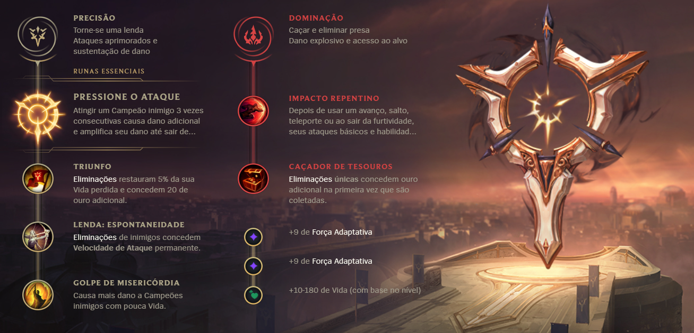

As runas da Briar é única, a build de pressione ataque ja é perfeita para a personagem,tem exatamente tudo que ela precisa para a partida, na página de precisão o pressione ataque é perfeito para um dano explosivo e continuo o triunfo, espontaniedade e golpe de misericordia são feitos para escalar com sua cura, com essas runas cura não vai fazer falta, e na página de dominação impacto repentino e caçador de tesouros são feitos para dar uma força a mais no jogo, e os atributos são sempre 2 de dano e um de vida escalavel ja que todas as suas habilidades escalam com vida, em resumo não mude a runa idependente da partida.